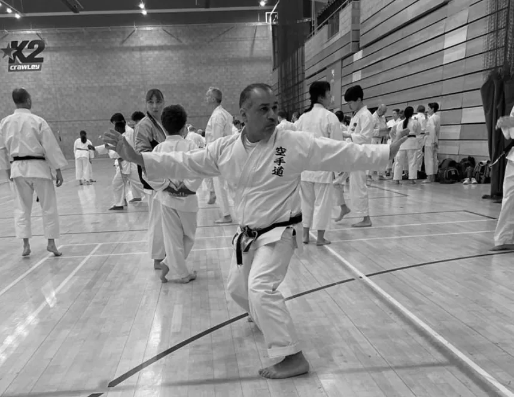
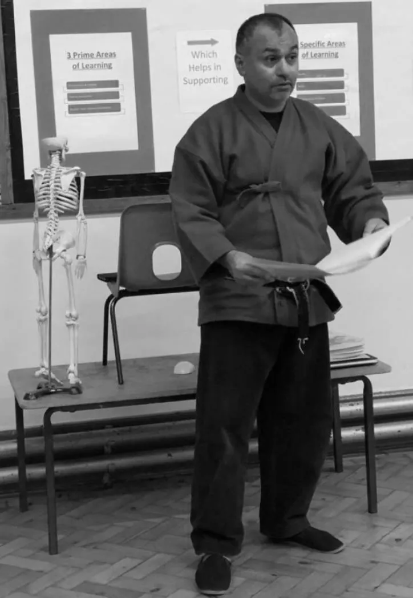
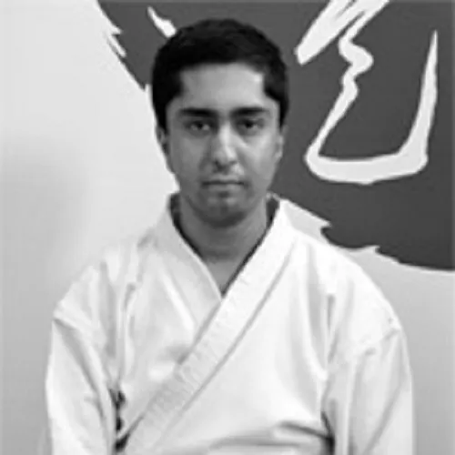
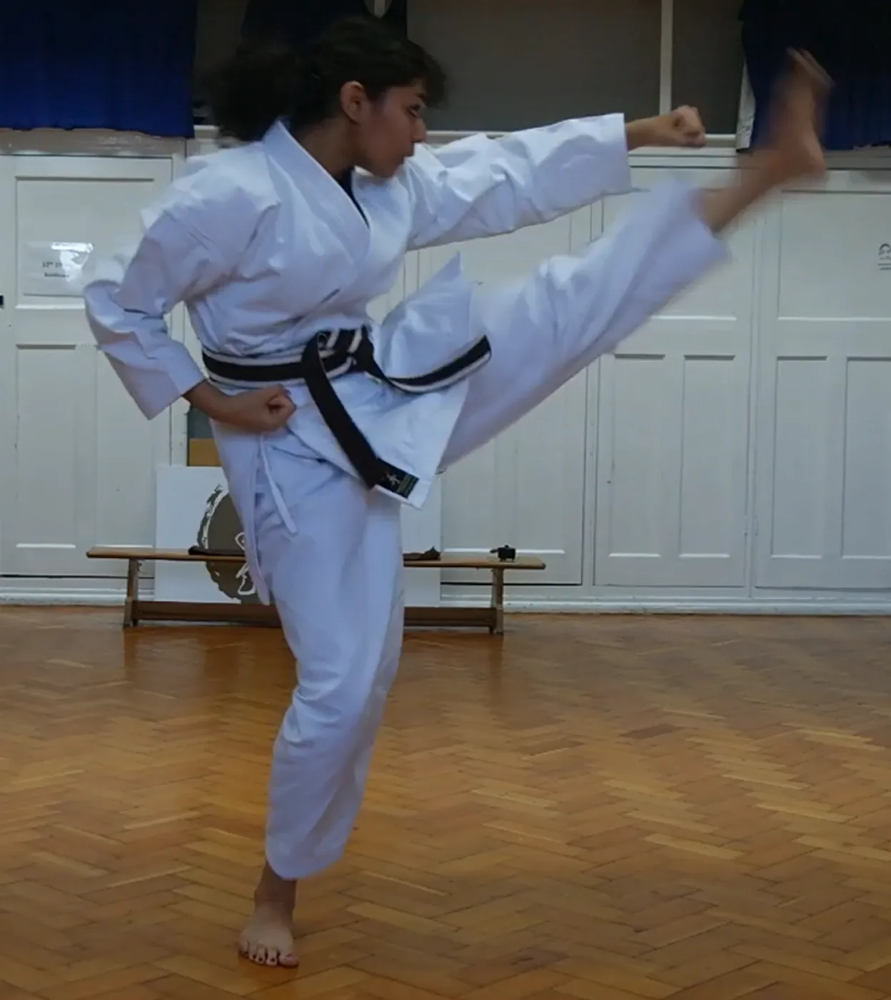
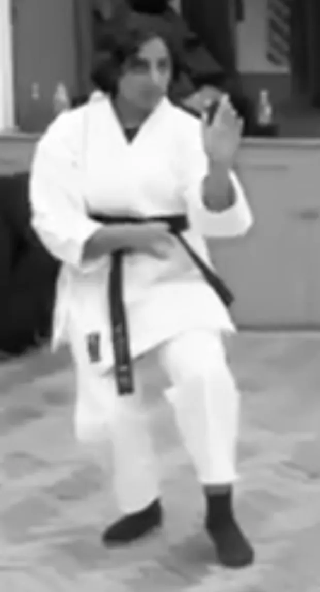
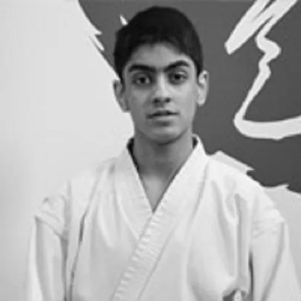
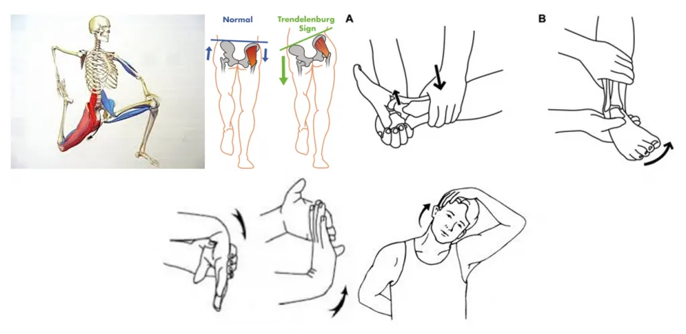

The way of the empty hand.
Classical Shotokan Karate, Tai Chi Chuan, Yoga and Shiatsu in Ilford & Epping (invite only) — taught with patience, rooted in tradition, and open to every age and ability.
A traditional school with a modern, person-centred heart.
EmptyHands is a Traditional KaraTe School. Our practice is based on the classical Shotokan system with influences from Goju Ryu, Shiatsu (acupressure) and Internal Martial Arts (Tai Chi Chuan).
Our Dojo was founded in 2006 on the ideals of Gichin Funakoshi Hanshi, founder of modern-day Karate. The format of our syllabus has been inspired by the work of the late Hirokazu Kanazawa Sōke, with some adaptations — and we place great emphasis on the values and beliefs of Karate through the study of the Dojo Kun.

Five paths. One practice.
From your first bow on the dojo floor to one-to-one healing — everything we teach informs everything else.
 空手
空手Karate-Dō
Classical Shotokan with Goju Ryu influences — kihon, kata, bunkai and kumite for children and adults.
DiscoverヨガYoga
Himalayan Hatha Yoga, blended with Karate, Tai Chi and Shiatsu to ease everyday stress.
Discover 太極拳
太極拳Tai Chi
Traditional Yang family Tai Chi Chuan in the lineage of Master Ding.
Discover指圧Shiatsu
Japanese finger-pressure therapy for wellbeing, self-care and rehabilitation.
Discover指導Coaching
Person-centred coaching for self-development, rehabilitation and wellbeing.
DiscoverFour pillars of Karate-Dō
Our teaching philosophy is person-centred and built on the fundamentals every karateka returns to, from white belt to Sensei.
Kihon
BasicsStances, blocks, strikes and kicks repeated until they become second nature.
Kata
FormChoreographed sequences that carry the techniques and spirit of the masters.
Bunkai
ApplicationUnlocking what each movement of a kata really means — and how to use it.
Kumite
SparringSafe, controlled partner work that develops timing, distance and composure.
Karate begins and ends with respect.
Recited at the close of every class, the Dojo Kun are the values our students carry out of the dojo and into school, work and family life.
- 人格完成に努むることSeek perfection of character
- 誠の道を守ることBe faithful
- 努力の精神を養うことEndeavour to excel
- 礼儀を重んずることRespect others
- 血気の勇を戒むることRefrain from violent behaviour
Train with us this week
We publish our calendar at the end of each year so every student can plan the year ahead. 2026 calendar

Three decades on the path of the martial, healing & coaching arts.
- GoDan · 5th Dan
- MA Coaching
- BA (Hons)
- Dip Shiatsu-Do
Azeem founded EmptyHands in March 2006 to create a Dojo grounded in the principles of Bushidō — discipline, respect and purpose — while embracing thoughtful, modern interpretation.
Guided by masters including Hirokazu Kanazawa Sōke, Chris Rowen Shihan, Yoshinobu Ohta Sensei and Nobuaki Kanazawa Kanchō, he also studied Tai Chi Chuan with Master John Ding and graduated from the British School of Shiatsu-Do. His Oxford Brookes MA developed the first Karate Coaching Model.
Meet all our instructorsFrom parents, students & masters
Empty hands have been absolutely amazing! My 9 and 11 year old have been attending for several months now. They really enjoy their sessions and always come back having learnt so much and so excited for the next session! The sessions are so organised and I leave my daughters there and trust that they are also safe too. We will definitely be watching our daughters grow with empty hands until the end and couldn’t thank them enough!
I have been attending this dojo for several years now and it has been excellent all throughout. This dojo is incredibly dedicated to teaching students and has great amounts of respect to karate — it has taught me a lot about karate in many aspects (not just the physical aspects — theory and history of karate too) and I have great respect towards the art because of this. The dojo also teaches you a lot about mindfulness, which is incredibly important and has helped me a lot in my general life as well as my training. I would definitely highly recommend people to join and be a part of this experience.
My children have been attending this dojo for five years now. From day one they were made to feel welcome and Irm, one of the instructors, has an excellent way with young children. I’ve seen both of my kids gain knowledge and develop their techniques. Sensei Azeem is an excellent instructor and my kids enjoy the training they have had in their journey. The monthly workshops are very informative and enjoyable, making it altogether an invaluable experience. In addition to karate I’ve seen the development of self-confidence, discipline and a positive mindset in both of my children. There is a celebration of success at the final lesson of the year which everyone enjoys and it’s a fitting way to round off the year.
My kids have been attending the Dojo for a year now, they are being taught by excellent instructors. Besides learning the art of self defence, they are also learning important life skills, values and respect.
I had the good fortune to have been invited to teach my Be Easy Sotai event at this Karate School. It was inspiring to be there as it was clean, it is a very large dojo. Plus they honour and keep all the old protocols from the Budo past. This is an excellent location to learn a martial art plus the Sensei knows what he is doing.
100% Best yoga classes, Teacher are very polite and professional. I have been going to classes for almost a year and I see a huge result. Definitely recommended ❤️🙏
Irm is a fantastic yoga instructor! Incredibly patient and supportive.
I’ve known Azeem for nearly 14 years as a colleague and friend. Having trained with Azeem at the British School of Shiatsu-Do, I can vouch for his professionalism and skill. His Shiatsu practice is well informed, skilled, sensitive and intuitive. Azeem takes a holistic view of the client, able to treat them individually and appropriately, understanding the type of treatment required. His treatments for my back pain have been second to none! As well as Shiatsu, Azeem remains totally committed to his Karate Dojo, understanding how one art form informs and supports the other. If you are lucky enough to be able to book a shiatsu treatment with Azeem, you’ll reap the health rewards and meet a lovely person to boot!
I have known Azeem for most of his Karate career and have always been impressed with his passion for Martial Arts. Over the years I have got to know him as a student and a friend. He is a shining example of one who has put time, effort and belief into Karate-Do and has selflessly shared it for the benefit of a wider audience. He recently completed an MA research study in Karate Coaching which has been a ground-breaking and thought-provoking contribution to the literature of Karate-do. Azeem is a true traditional martial artist who has persistently exemplified devout loyalty and respect to the Karate lineage. His innovative and forward-thinking approach has made him a great ambassador of Karate. In the 90s he pioneered one of the first online Karate magazines, where martial artists from all walks of life would come together to share their ideas.
Fifteen black belts — and counting.
Every name on our Yudansha wall started exactly where you would: at white belt, nervous, on their first night.










Notes from the dojo
Reflections & Learning from Lockdown
The purpose of this blog is to share my experiences and some thoughts from the lockdown which have helped me to maintain routine without being perturbed by…

History of Karate-Dō
History of Karate began over a thousand years ago, possibly as early as the fifth century BC when Bodhidharma arrived in China (Henan Province, Songshan…

Sports Injuries
Many studies have shown that Martial Arts (all contact sports) are often associated to high risk of injuries. Subsequently, there is a need of a more pragmatic…
Your first lesson is the hardest step. We’ll take it with you.
New students can pay as they go for their first few weeks — just turn up in comfortable clothes.